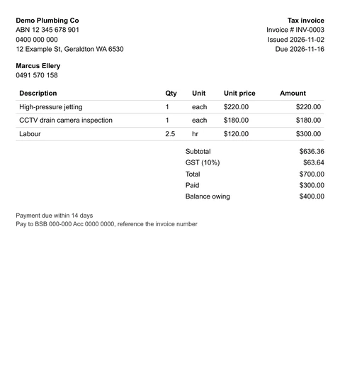
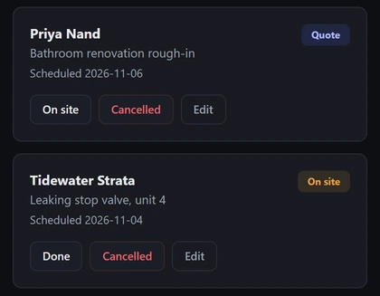
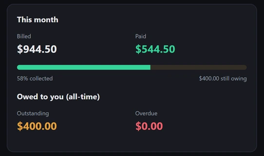
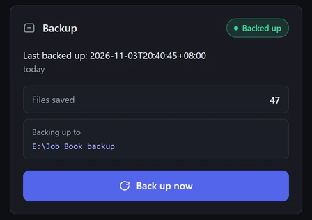

All five from v1 running on my PC · demo data for a made-up plumbing business · plumber skin
Business software a small operator buys once and owns. It runs on their own PC, keeps working with the internet off, and there’s no monthly bill.




All five from v1 running on my PC · demo data for a made-up plumbing business · plumber skin
Most small operators rent their business software. Stop paying and you lose access to your own records. OPERATIONAL_CORE goes the other way: you buy it once, it lives on your machine, and your files stay yours.
It’s built for the sole trader or a crew of one to three: someone who wants to quote it, get paid, and hand clean numbers to their accountant, without paying for payroll, tax lodgement and bank feeds they’ll never use.
The daily paperwork of a small business, done properly and kept on the owner’s own machine.
No subscription. No account. Nothing phoning home.
The design, the rules and every decision. The code was written by AI under those rules, and nothing was sealed until it passed.
Deliberately short. The only outside packages are the web framework and its server; everything else is the Python standard library.
The same shape as every job: one agent plans and writes the work up, another builds it, a separate one audits it, and nothing is sealed until I’ve checked it first-hand.
It was built in sealed phases, each one finished and tested before the next began: the storage engine first, then record history, then customers, jobs and money, then the web layer, then the screens.
Version 2 is planned and researched. No code is written yet, on purpose. Two checks come first: a long stability run on version 1, and putting it in front of tradies who don’t know me to find out what they’d pay and what would stop them buying.
I don’t sell features that don’t exist yet. When v2 is real, it’ll be here.
This is what I mean by built to last. No AI to drift, no vendor to change the rules, no subscription to lapse. It does the same thing tomorrow that it did today, on the owner’s own machine.
If your business needs software that just keeps working, this is how I build it.